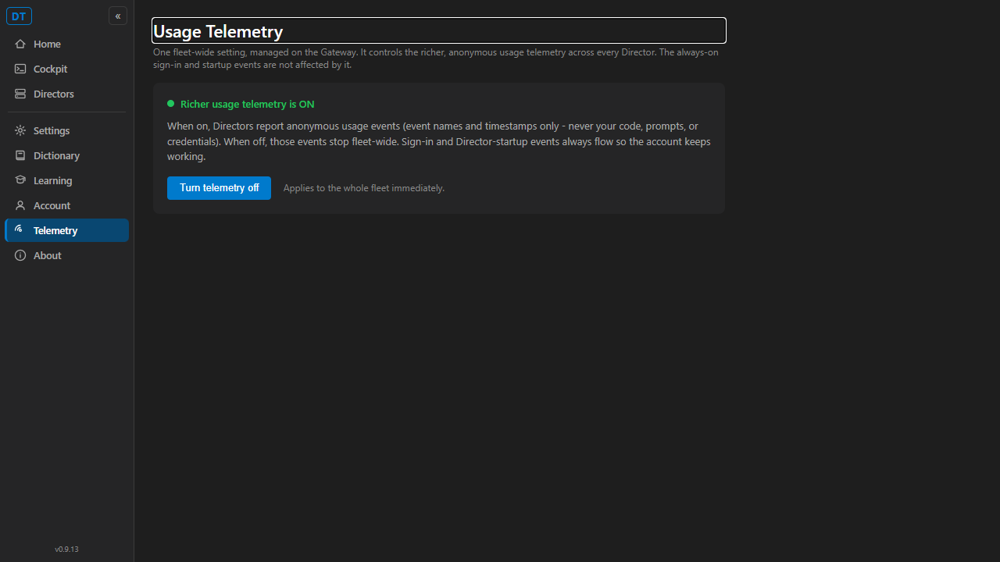
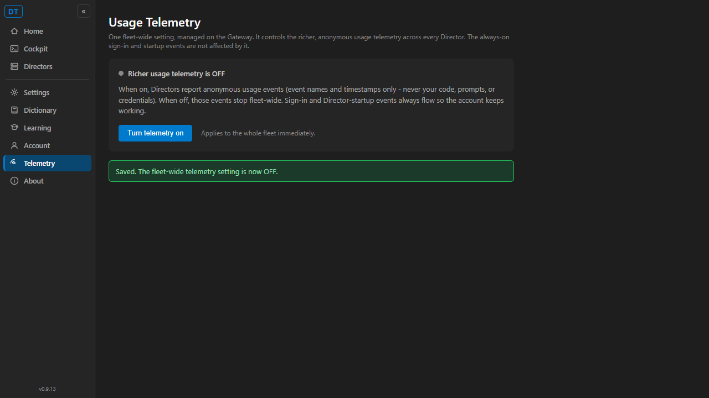

[Cockpit] Centralized telemetry consent toggle on the Gateway — Gateway Centralization Phase 3, plan decision #4.
The richer-usage-telemetry consent (opt-out) is now an authoritative, fleet-wide setting on the
Gateway, with a Cockpit toggle to change it, and Directors honor it. The always-on
authentication-floor events (the /telemetry/login and /telemetry/director-startup
events, issues #628/#631) are not gated by this and keep flowing. Default is ON.
CcDirector.Core/Configuration/TelemetryConsentConfig.cs:
persisted in config.json as the top-level boolean telemetry_consent, default ON,
read at decision time (no restart). Distinct from the per-Director telemetry.enabled flag,
which this issue deliberately leaves in place (its removal is #651).CcDirector.Gateway/Api/TelemetryConsentEndpoint.cs
maps GET/PUT /gateway/telemetry-consent; mapped from SettingsEndpoints and
surfaced in the /gateway/settings snapshot.CcDirector.Core/Account/GatewayTelemetryConsent.cs:
RefreshAsync() fetches the authoritative value off-thread and caches it to disk;
IsConsentedCached() reads the last-known value synchronously. When the Gateway is unreachable
the synchronous decision stays at the last-known value (degraded, decision #3) — never a hidden
fallback. When nothing was ever cached it uses the documented default (ON).UsageTelemetry.ForDirector(...) composes the Gateway consent
AND the local toggle, so turning the Gateway setting OFF stops the richer usage events fleet-wide.CcDirector.Cockpit/Components/Pages/Telemetry.razor
+ GatewayClient.GetTelemetryConsentAsync/SetTelemetryConsentAsync +
TelemetryConsentDto contract + a Telemetry nav entry. Cockpit talks ONLY to the Gateway.
Styled to the dark VS Code palette per docs/VisualStyle.md.| Criterion | Expected | Actual (verified) |
|---|---|---|
| AC1. A consent toggle exists on the gateway/Cockpit, defaults ON, and persists on the gateway across restart. | Cockpit page shows the toggle defaulting ON; PUT OFF persists to the gateway; a gateway restart still reports the persisted value. | PASS. Cockpit /telemetry renders "Richer usage telemetry is ON" by default (screenshot below). Live: a fresh gateway with no config returns {"enabled":true}; PUT OFF writes telemetry_consent:false to config.json; after stopping and restarting the gateway, GET still returns {"enabled":false} (read from disk). Endpoint + config unit tests confirm. |
| AC2. The richer usage telemetry is gated by the gateway setting; turning it OFF stops the richer usage events fleet-wide while the always-on login/startup events still flow. | With gateway consent OFF, UsageTelemetry records nothing; the auth-floor reporters still POST. |
PASS. UsageTelemetry_ForDirector_WhenGatewayConsentOff_DoesNotRecord proves Record() returns false and writes no sink file when consent is OFF (local toggle ON, so only the gateway gate stops it). AuthFloorReporter_StillPosts_WhenGatewayConsentOff proves the director-startup reporter still POSTs with consent OFF (it has no dependency on the consent at all). |
| AC3. A Director reads the gateway consent and honors it; with the gateway unreachable it uses the last-known value (degraded). | Director fetches and honors the gateway value; when the gateway is down it uses the last-known cached value. | PASS. RefreshAsync_ReadsGatewayValue_AndCachesIt + IsConsentedCached_AfterRefresh_ReturnsTheGatewayValue prove the director honors the gateway value. IsConsentedCached_WhenGatewayUnreachable_UsesLastKnownValue proves the degraded path returns the last-known OFF. IsConsentedCached_WhenNothingCached_DefaultsOn proves the documented default. RefreshAsync_WhenGatewayUnreachable_Throws_AndCacheIsUnchanged proves no hidden fallback inside the network read. |
| AC4. Unit tests cover default-ON, persisted-OFF gates richer telemetry, and auth-floor events remain ungated. | Tests in CcDirector.Gateway.Tests (and Core where the gating lives). |
PASS. 17 new tests, all green: 4 endpoint tests (Gateway.Tests), 5 config tests + 8 reader/gating/auth-floor tests (Core.Tests). See test-results.log. |
The real CcDirector.Cockpit Blazor app, pointed at a real TelemetryConsentEndpoint
host over an isolated config root. The toggle was clicked in the browser; the Gateway value flipped OFF in
response ({"enabled":false}), and the page confirmed "Saved".


Fresh proof root, no config.json -> GET /gateway/telemetry-consent => {"enabled":true} (default ON)
PUT {"enabled":false} => {"enabled":false}
GET reflects OFF => {"enabled":false}
config.json on disk => { "telemetry_consent": false }
[stop the gateway process] => /healthz unreachable
[restart the gateway] => GET => {"enabled":false} (survived restart)
Full transcript: ac1-persistence.log. The default is ON, so an OFF read after a
restart can only come from persisted state.
Core.Tests (TelemetryConsentConfig + GatewayTelemetryConsent): 13 passed Gateway.Tests (TelemetryConsentEndpoint): 4 passed Total: 17 passed, 0 failed
Full output: test-results.log. Solution build: dotnet build cc-director.sln —
Build succeeded, 0 Warning(s), 0 Error(s) (warnings-as-errors on).
No architecture container added or removed: this extends the existing CcDirector.Gateway settings
surface, CcDirector.Cockpit settings UI, and CcDirector.Core telemetry within already
-documented containers. No security posture change — the consent flag carries no token and no PII, and no
credential material is logged (the response is a single boolean). No docs/cencon/ drift.
I believe this is finished. All four acceptance criteria are met and proven (live Cockpit screenshots, a live persistence-across-restart transcript, and 17 passing unit tests), the solution builds clean with warnings-as-errors, and the change stays within the documented architecture and security posture.